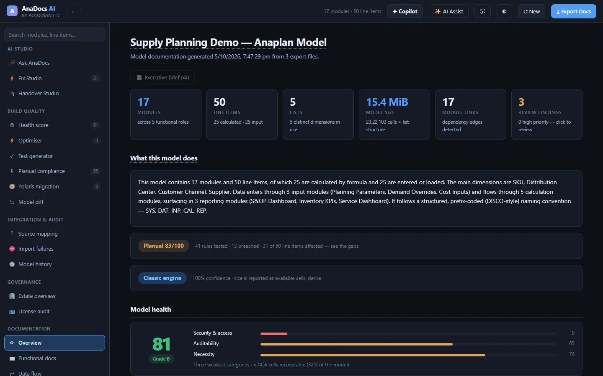
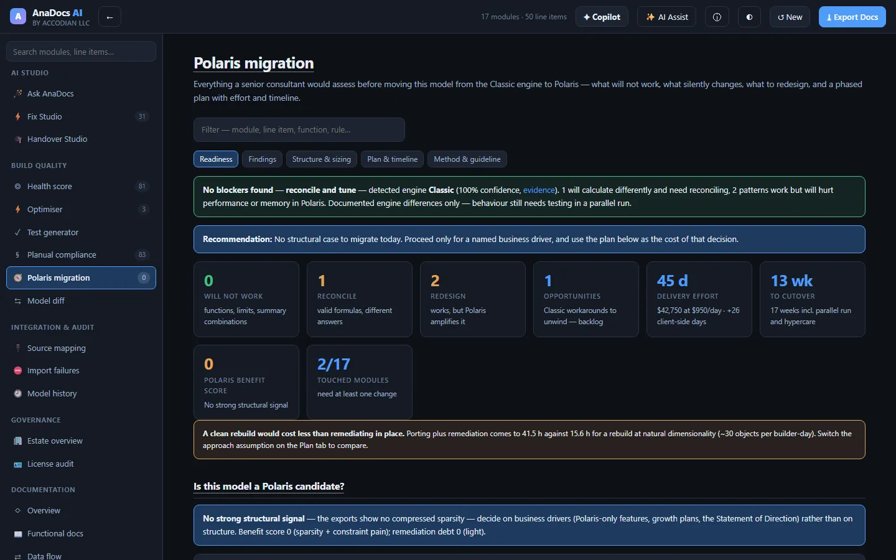
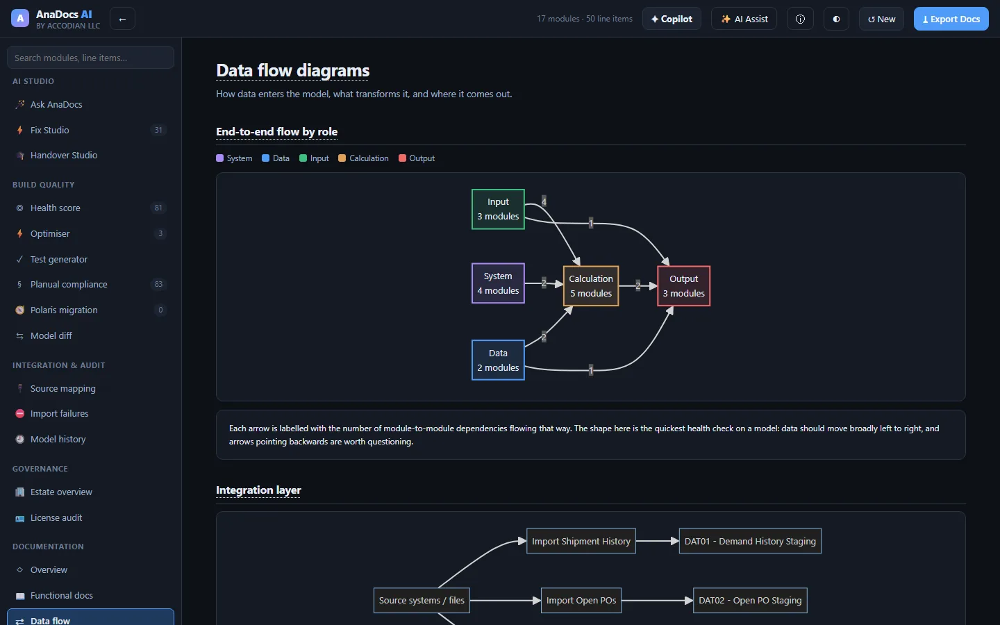
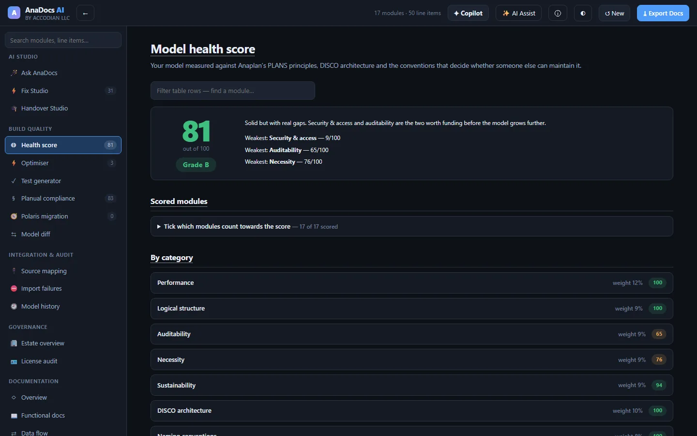

Understand any Anaplan model in minutes, not weeks
AnaDocs AI turns the exports Anaplan already gives you into complete documentation, a health score, Planual compliance, test packs and a Polaris migration plan — and an AI assistant that answers questions about your model with citations you can click.

Documentation a reviewer would sign off — generated, not typed
Drop the Blueprint, Lists and Actions exports. AnaDocs AI parses every module, line item and formula and builds the documentation and the analysis a senior Anaplan consultant would produce by hand.
Living documentation
Functional and technical docs per module, data-flow diagrams, dependency maps, a business glossary and line-item lineage — exported as an interactive doc site or Markdown.
Formulas in plain English
Every formula rebuilt as natural sentences, with each referenced line item explained — the fastest way to hand a model to someone new.
Health score & Planual
Twelve weighted categories against PLANS, DISCO and the Planual, with the scoring maths shown and intentional design choices excludable with a written reason.
Optimiser
Anti-patterns that cost memory or calculation time, sized in real bytes for the engine your model runs on — populated cells on Polaris, the dense grid on Classic.
Test generator
Risk-ranked coverage, boundary tests from your own IF conditions, UAT scripts, buildable check modules and a regression baseline for releases.
History, audit & diff
Who changed what and when from the History export — blame per line item, audit packs — plus a structural diff between two versions of the model.
Source mapping & import failures
Profile an ERP extract against a target module with value-by-value checks, and turn an import error dump into root causes with ordered fixes.
Estate & license audit
Compare models across the estate, spot cross-model feeds and drift, and find dormant or over-licensed seats priced at your own contract rates.
Polaris migration planner
What will not work on Polaris, what calculates differently, what to redesign — and a phased plan with effort, timeline and roles.
A senior-consultant migration assessment, generated from your model
Anaplan's direction is Polaris, and there is no converter. AnaDocs AI scans every line item against the documented engine differences and builds the plan around what it finds.
- Will not work — functions Polaris lacks, summary-method combinations it rejects, formulas over the length limit, invalid LOOKUP and time-scale patterns.
- Reconcile — valid formulas whose answers change between engines, pre-flagged for the reconciliation team.
- Redesign — patterns Polaris amplifies, ranked against your model's own calculation-effort hotspots.
- The plan — entitlement, port or rebuild, remediation, security, parallel run, cutover and hypercare, with effort and timeline you can tune.

Ask the model. Get answers you can verify.
Built on Anthropic's Claude, the AI layer reads the parsed model through tools — it does not guess. Every claim links to the module or line item it came from.
- Ask AnaDocs — "What breaks if I rename the SKU list?" answered with clickable citations.
- Fix Studio — corrected formulas with before / after diffs, risk and steps, collected into a remediation pack.
- Handover Studio — a role-tailored onboarding course for whoever inherits the model.
- Section briefs — executive summary, savings memo, release notes and CoE memo on demand.
AI output is generated and should be checked against the model before you rely on it. The AI runs only when you ask it to.

Your model stays on your machine
Model designs are confidential. AnaDocs AI was built so that none of it has to leave your laptop.
Parsed in the browser
Exports are read by the app on your machine. There is no upload, no server-side copy of your model, no telemetry and no analytics.
Locked-down by policy
A strict content-security policy blocks every outbound connection except the AI provider — and that is only contacted when you run an AI feature.
Metadata, not data
Documentation needs structure — formulas, dimensions, actions — not your planning numbers. The optional Anaplan connector pulls metadata only, never cell data.
From export to documented model in three steps
Export
Download the Blueprint, Lists and Actions exports from Anaplan — or let the connector script pull the same metadata through Anaplan's API.
Drop
Drop the files into AnaDocs AI. Column names don't need to match; the app recognises Anaplan's exports and works out the rest.
Review & act
Read the docs, the health score and the findings; export the doc site, test packs and migration plan; ask the AI what to fix first.
The people who own Anaplan models
- CoE leads — estate-wide health, governance, license reclamation and release evidence.
- Model builders — what a formula does, what depends on it, and what to fix first.
- Partners & consultants — health checks, handovers and Polaris assessments in a fraction of the time.

See AnaDocs AI on your own model
Book a walkthrough and we'll document one of your models live — from export to health score, test pack and Polaris plan.
Request a demo →